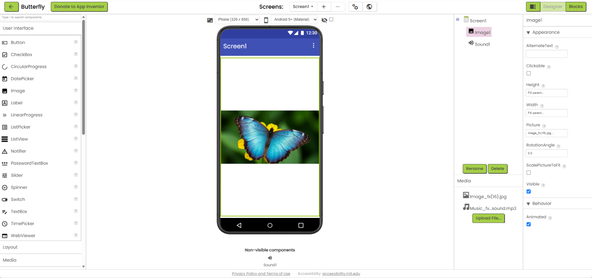

Open in MIT App Inventor
Open in MIT App Inventor
Creative technology
App development
Learning how ideas become interactive experiences, one project at a time.
A featured project
Selected project
Open in MIT App Inventor

Open in MIT App Inventor